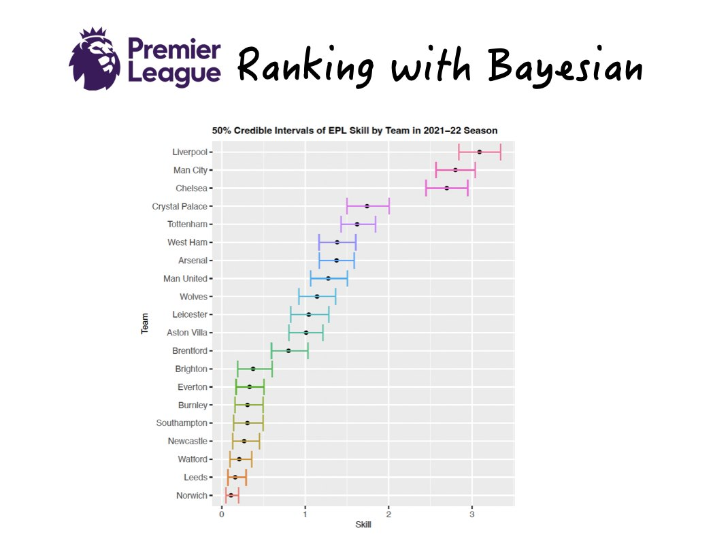
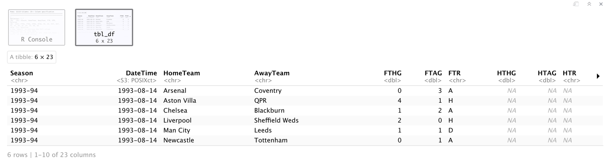
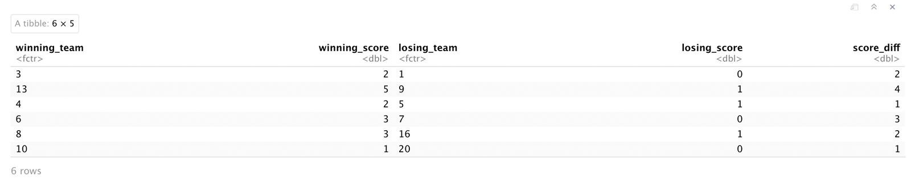
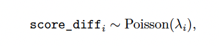
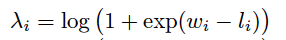
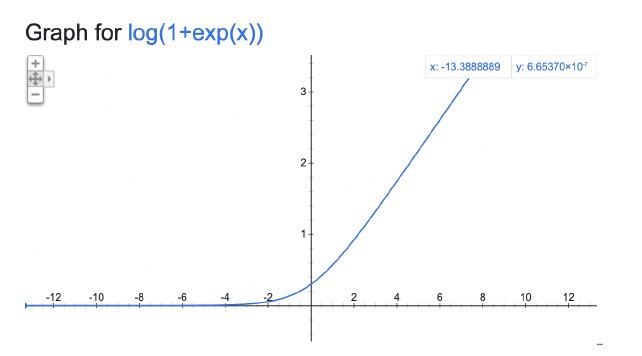
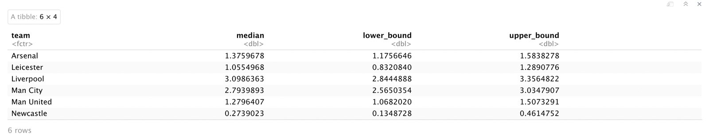
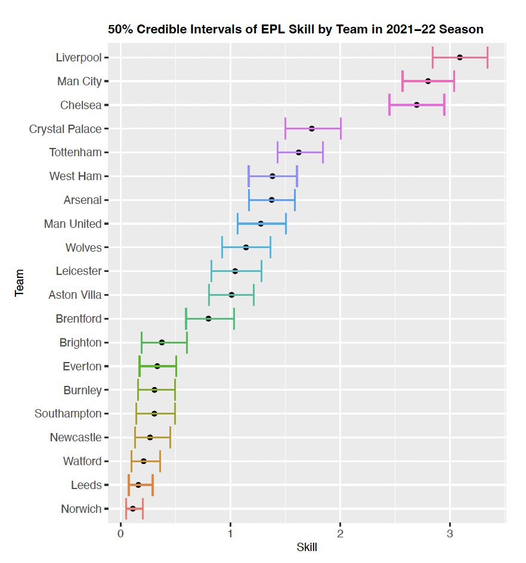
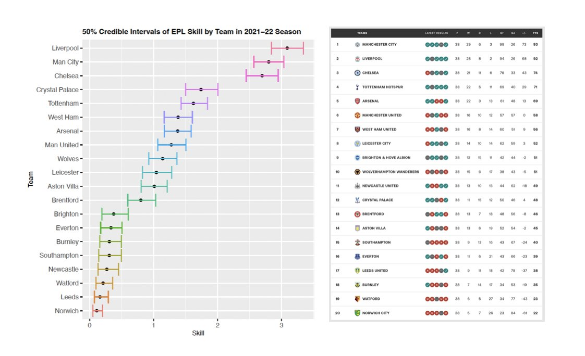

EPL Ranking with Bayesian Inference
As a football fan, sometimes you might wonder how good your team is compared to other teams, or even thinking about predicting the final score of the game when your team is playing with other teams. There are many ways to tackle this problem, one promising approach is to apply the Bayesian Inference to develop strength or skill comparison of each team. Therefore, I collect the English Premier League match result from 2021-22 season to run the analysis and compare with the actual EPL result.

English Premier League Team Ranking
English Premier League football (EPL) is one of the most popular professional football league in the world, it has been broadcasted and been watched from all over the world. As a sport fan or a football fan, you might have heard that many famous football players decide to play in the EPL because its competitiveness and its popularity.
Growing up in Thailand where football is #1 sport in the country, I have been watching and following the EPL since grade6, it becomes one of my routine to check the result of my beloved team. Many times, you end up arguing with your friend whether you supported team is better than their team. In this work, I apply the Bayesian inference in R to help infer the strength or skill of each team, so we can have a holistic idea how the teams perform during the season.
Wrangling the data
We will use the English Premier League (EPL) Results dataset available on Kaggle. This dataset includes all match results from season 1993-94 to 2021-22 season and we will use only the 2021-22 season to perform the analysis.
Therefore, let's start it by loading the necessary libraries and reading the data. Please be noted that Rstan library needed to be properly installed in R first.
```{r setup, include=FALSE}
knitr::opts_chunk$set(echo = TRUE)
library(tidyverse)
library(rstan)
library(rstantools)
library(cowplot)
library(lubridate)
rstan_options(auto_write = TRUE)
``````{r}
games_raw <- read_csv("data/results.csv")
head(games_raw)
```
Then, we wrangle the data to have only some necessary columns to run the analysis.
```{r}
games <- games_raw |> filter(Season == "2021-22")
games <- games |>
mutate(
AwayTeam = as.factor(AwayTeam),
HomeTeam = as.factor(HomeTeam)
)
# Create a dictionary of IDs, and assign numerical codes
# from 1 to 20 according to the alphabetical order.
dictionary_names <- tibble(
team = levels(games$HomeTeam),
code = 1:20
)
# Select related columns.
games <- games |>
select(
DateTime, HomeTeam, AwayTeam,
FTHG, FTAG
)
# Switch the ID names to numerical codes from 1 to 20
levels(games$HomeTeam) <- 1:20
levels(games$AwayTeam) <- 1:20
# Formulate new columns
games <- games |>
mutate(
winning_team = case_when(
FTAG > FTHG ~ AwayTeam,
FTAG < FTHG ~ HomeTeam
),
winning_score = case_when(
FTAG > FTHG ~ FTAG,
FTAG < FTHG ~ FTHG
),
losing_team = case_when(
FTAG > FTHG ~ HomeTeam,
FTAG < FTHG ~ AwayTeam
),
losing_score = case_when(
FTAG > FTHG ~ FTHG,
FTAG < FTHG ~ FTAG
),
score_diff = winning_score - losing_score
) |>
select(
winning_team, winning_score,
losing_team, losing_score, score_diff
)
# Games resulting in tie will be discarded.
games <- drop_na(games)
head(games)
```
Design the probabilistic model
Before running the Bayesian statistics with MCMC simulation (Markov Chain Monte Carlo simulation) with Rstan in R, we need to setup the probabilistic model for the problem, or in another word, setup the skill or strength function.
Thinking about the winning_team and losing_team, they can be only positive integers between 1-20 indicating the team while the winning_score, losing_score, and score_diff will be positive integers since the score in football can only be positive integer and the score_diff which is winning_score - losing_score will be positive integer as well. Therefore, we can setup the score_diff to be a Poisson distribution as below.

where λi is a continuous function of the skill of the winning_team and the skill of the losing_team.
In addition, we need to consider the way we model this λ parameter as well. Since the λ in the Poisson distribution is only allowed to be a positive integer and it is better if we can differentiate between strong and weak team. Therefore, we could use the log function below as a function of λ. This function is appropriate because Wi - Li is non-negative variable and we can have skill which is non-negative variable as well. Also, if we have more difference in Wi - Li, the skill will be greatly increased and it helps differentiate skill of each team.


For the prior, since skill is non-negative variable, therefore, I choose the Gamma(alpha, beta) distribution to be the prior distribution of the skill so we can have the skill be a continuous and non-negative variable/distribution. Let's try a prior Gamma(α = 1, β = 1).
Code and run the model
According to the setup above, we can code the Rstan model and run it with code blocks below. Please be noted that MCMC simulation will need sometimes to run, therefore, do not be alarm if it runs too long on your end.
```{stan output.var='epl_stan_model'}
data {
int<lower=0> n;
int<lower=0> t;
int<lower=1> win_team[n];
int<lower=1> lose_team[n];
int<lower=0> score_diff[n];
}
parameters {
vector<lower=0>[t] skill;
}
model {
for (j in 1:t){
skill[j] ~ gamma(1, 1);
}
for (i in 1:n){
int win_index = win_team[i];
int lose_index = lose_team[i];
score_diff[i] ~ poisson(log(1 + exp(skill[win_index] - skill[lose_index])));
}
}
``````{r}
epl_dictionary <- list(
n = nrow(games),
t = nrow(dictionary_names),
win_team = as.integer(games$winning_team),
lose_team = as.integer(games$losing_team),
score_diff = as.integer(games$score_diff)
)
``````{r}
# Simulate Posterior
posterior_epl <- sampling(
object = epl_stan_model,
data = epl_dictionary,
chains = 1,
iter = 100000,
warmup = 2000,
thin = 20,
seed = 553
)
posterior_epl <- as.data.frame(posterior_epl)
```Result of the Bayesian model
After running the model, we can access the posterior distribution and run visualization as codes below.
```{r}
# The first 20 columns: skill[1], ... skill[20].
posterior_epl <- posterior_epl[, 1:20]
# Create a new column indicating the replicate by row .
posterior_epl$sample <- 1:nrow(posterior_epl)
# Melting the data frame leaving one column for the replicate number (sample),
# another one indicating the team (as skill[1], ... skill[20]), and
# the continuous posterior skill values from our Bayesian sampling.
posterior_epl <- posterior_epl |>
pivot_longer(!sample, names_to = "team", values_to = "skill")
# The real team codes stored in dictionary_names instead of skill[1], ..., skill[20].
posterior_epl$team <- as.factor(posterior_epl$team)
dictionary_names <- dictionary_names %>%
mutate(code = paste("skill[", as.character(code), "]", sep = ""))
recoding <- dictionary_names$team
names(recoding) <- dictionary_names$code
levels(posterior_epl$team) <- recode(
levels(posterior_epl$team),
!!!recoding
)
posterior_epl_CIs <- posterior_epl |>
group_by(team) |>
summarize(median = median(skill),
lower_bound = quantile(skill, probs=0.25),
upper_bound = quantile(skill, probs=0.75),
)
head(posterior_epl_CIs)
```

```{r fig.width=7, fig.height=6}
posterior_epl_CIs_sorted <- posterior_epl_CIs |>
mutate(team = fct_reorder(team, median))
posterior_epl_CIs_plot<- posterior_epl_CIs_sorted |>
ggplot(aes(x=median, y=team)) +
geom_point() +
geom_errorbarh(aes(xmax = lower_bound, xmin = upper_bound, color = team)) +
theme(
plot.title = element_text(size = 10, face = "bold"),
axis.text = element_text(size = 9),
axis.title = element_text(size = 9)
) +
xlab("Skill") +
ylab("Team") +
ggtitle("50% Credible Intervals of EPL Skill by Team in 2021-22 Season")
posterior_epl_CIs_plot
```
Based on the 50% credible interval result above, we can see that there is a clear cut of one superior group of 3 teams; Liverpool, Man City, and Chelsea that has better skill than the rest because their 50% credible interval of these 3 teams do not intersect with the credible intervals of other remaining teams. In addition, there is a closed separation between Brentford and Brighton since their 50% credible interval intersect with a tiny gap. Yet, roughly, we can separate the 2nd tier of team from Crystal Palace to Brentford, and the 3rd tier from Brighton to Norwich.
Compare to the actual EPL table

When we compare the Bayesian inference result with the real final league table, we can see that the skill result quite aligns with the final league table, many teams ended up in the same position with a tiny gap of error. However, there are some big difference for some teams such as Crystal Palace, Brighton, and Newcastle. One probable cause is that we setup the skill by the amount of goal difference, these teams might win a big goal difference but lose with a tiny goal difference, therefore, the skill is difference than the real league table that measures only the winning point.
Other methods to improve this Bayesian inference model is to,
Incorporate the latest league standing of each team before playing because the difference in the standing will probably influence to how the team plan to play which we relate to the goal difference as well.
Consider the moral of the team by using some previous match results into calculation. A teams that win some matches consecutively will have high moral to play rather than a losing streak team.
Consider to separate the skill into attacking skill and defensive skill because each team will have difference strategy or strength in a game plan.
Consider to formulate a new skill function that incorporate draw games as well.
Summary
Even though, there are several ways to construct skill difference of any sport teams, some methods such as Regression, Classification, and Clustering may not be obvious for this question. One promising way is to apply the Bayesian Inference with proper probabilistic model setup, this will help us analyze the skill of each team and have a holistic idea that we can analyze the skill of teams later on.